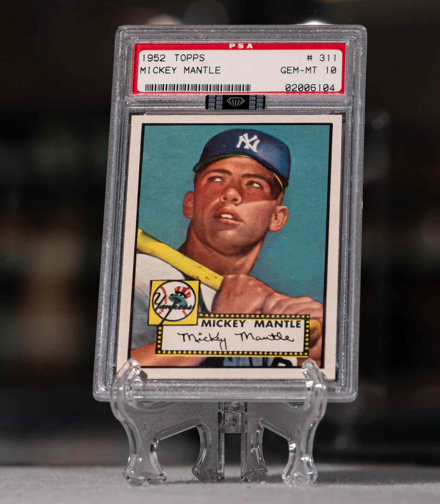
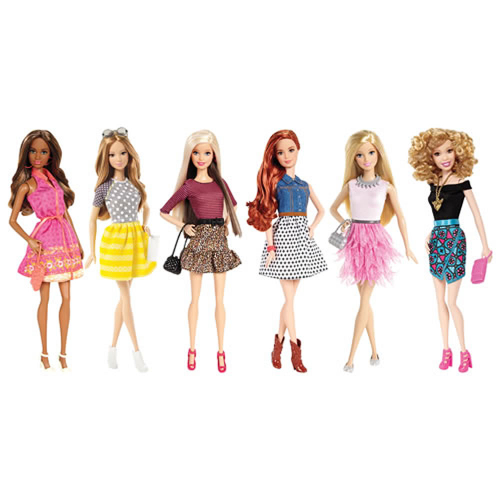
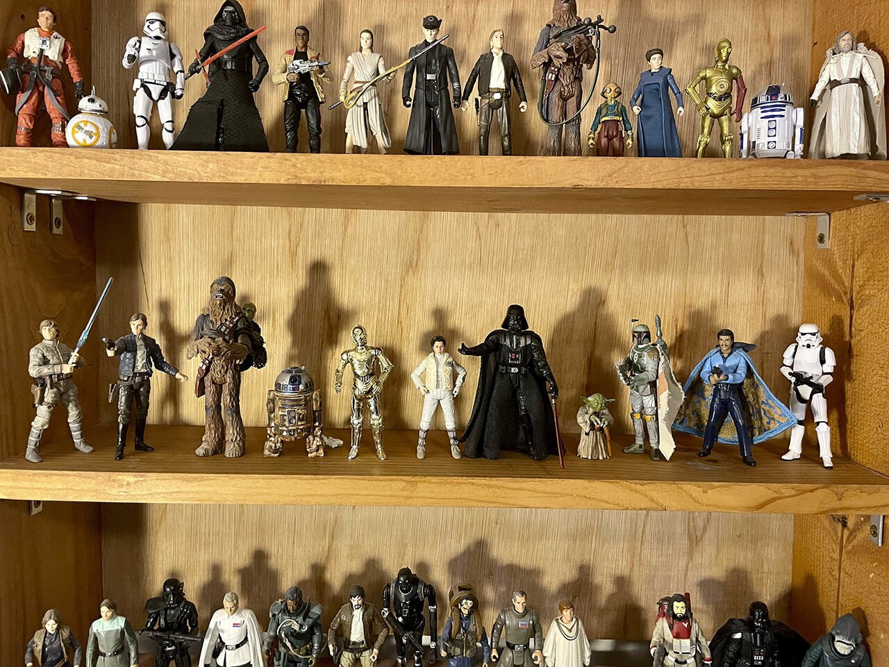
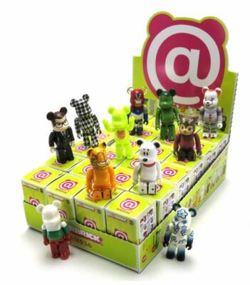
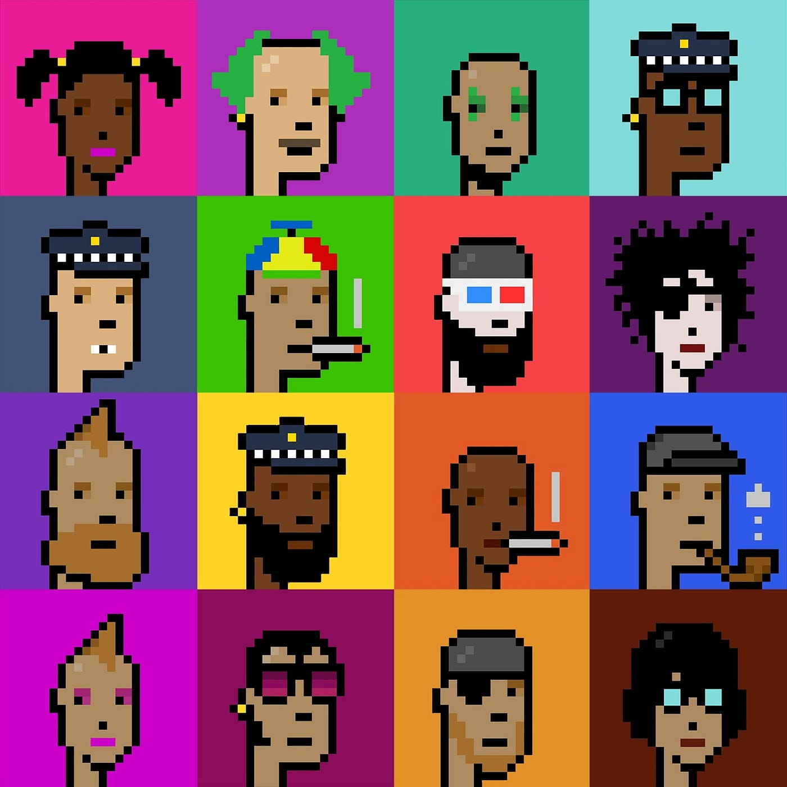
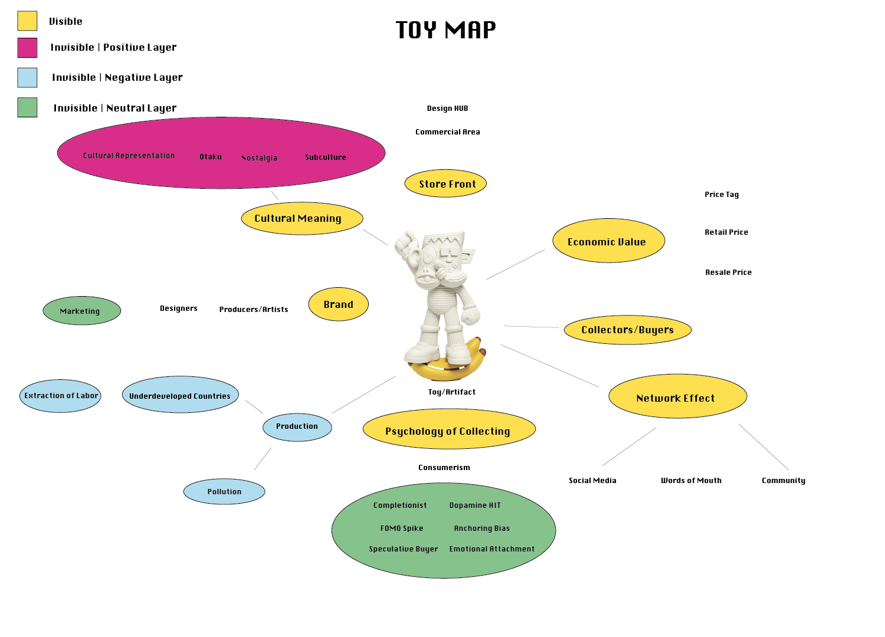
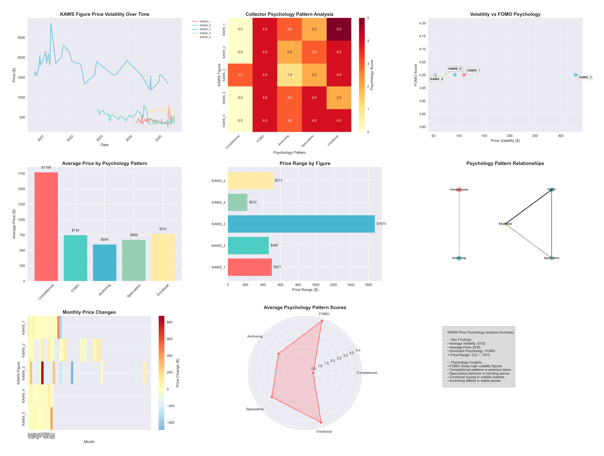
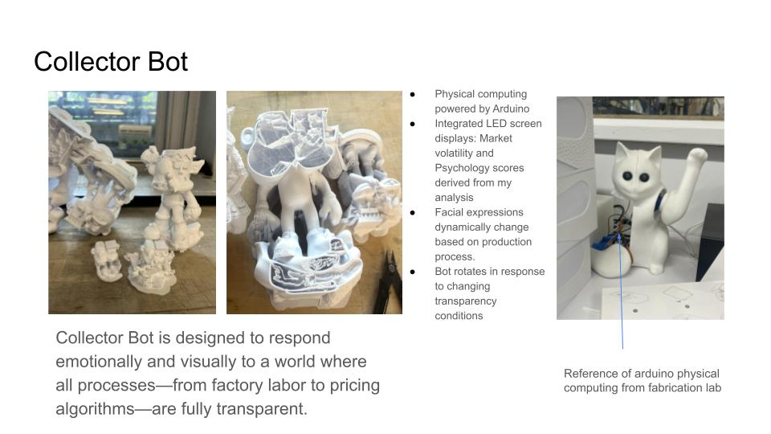
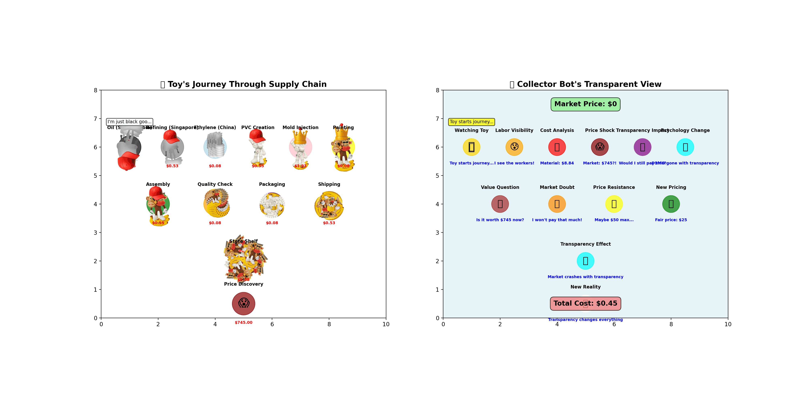

Uncovering the Hidden Infrastructures of Collectible Designer Toys

Trading Cards, Toys, Comics

Post-War Boom

Star Wars Revolution
Be@rbrick & Kidrobot
Digital Platforms

Gamification

NFTs & Blockchain
Social Media Flex

This analysis connects the psychology of collectors to actual KAWS figure price data. By analyzing price volatility, average prices, price ranges, and trends, we can identify which psychological patterns are most prevalent in the market.
Analyzed price data for 5 KAWS figures over time, tracking price movements and volatility patterns.
Applied scoring algorithms to identify Completionist, FOMO Spike, Anchoring Bias, Speculative Buyer, and Emotional Attachment patterns.
Created heatmaps, scatter plots, and radar charts to visualize the connection between psychology and pricing.
Highest psychology scores found in figures with limited releases and sudden price spikes.
Price outliers create new "anchors" that reset market expectations.
Clear correlation between market peaks and speculative buying behavior.
Figures with strong brand recognition command premium prices beyond material value.


